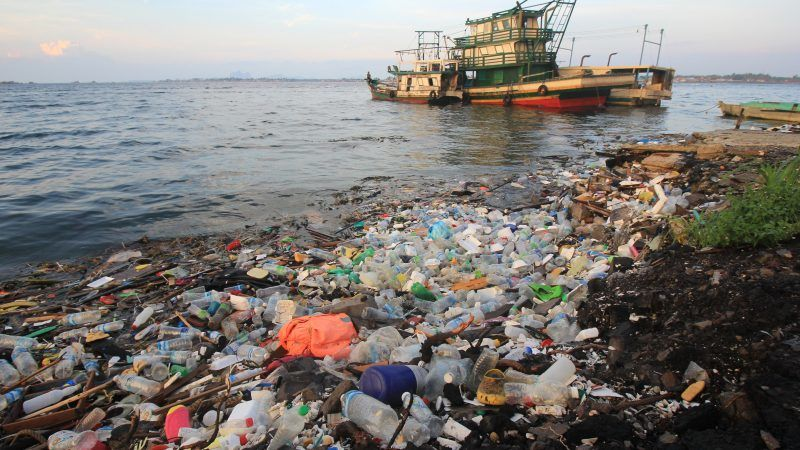

We are all familiar with plastic straws. When we go out to eat at a restaurant and order a drink, it usually comes with a plastic straw. We use that straw to drink our beverage. Recently, there has been a call to ban the use of plastic straws because of their negative contributions toward climate change and pollution. In order to understand exactly how plastic straws are harmful to the environment and climate, we must perform a Life-Cycle Assessment. In our assessment we will study the 4 major steps of the life cycle of a straw and evaluate how exactly each step harms the Earth.
In this step, the raw materials that are needed to make straws are extracted from the Earth by drilling the ground. The raw materials that are extracted consist of an oil called petroleum and a natural gas called propane (The Link Between…, 2018). Environmental Impacts: This extraction of oil and natural gas is harmful to the environment. The drilling process causes pollution by contamination of nearby water sources and the release of toxins, fumes, and greenhouse gases (The Link Between…, 2018).
In this step, the raw material is converted into a synthetic material called propylene resin. This resin is then heated and mixed with colorants and other additives. The resulting mixture is then molded into straws. The straws are packaged and sent to stores to sell (The Link Between…, 2018).
Environmental Impacts:
This manufacturing process causes significantly harmful releases of chemicals such as phthalates and brominated flame retardants. The packaging requires more plastic and paper usage. The shipping and transportation to stores releases greenhouse gases (The Link Between…, 2018).
In this step, people use the plastic straws when consuming different beverages. Consumers buy plastic straws to use at home and restaurants serve consumers drinks with straws.
In this step, the plastic straws are disposed of after their single use. Some straws are recycled at plants that have the ability to recycle plastic straws. Unfortunately, most recycling plants are unable to recycle plastic straws because straws are very small. As a result, most straws are sent to incineration plants or packed with waste that ends up being dumped into the ocean (Shen et al., 2020). Environmental Impacts: The incineration process releases ash, dangerous chemicals, and harmful toxins into the air. Since plastic straws are non-biodegradable, those that are dumped into the ocean remain there for hundreds of years. This poses a significant threat to marine life. (Shen et al., 2020). Below is a short animation on what can happen when straws pollute the ocean. 
From our Life-Cycle Assessment, we can see that plastic straws do negatively contribute to climate change through global warming and pollution. The drilling and extraction process of propane and petroleum required to make the straws cause toxins to seep into the nearby waterways and releases toxins, fumes, and greenhouse gases into the air. The manufacturing of the straws also causes harmful releases of chemicals such as phthalates and brominated flame retardants. The packaging process requires the use of more plastic and paper and the shipping and transportation also releases greenhouse gases (The Link Between…, 2018). After their single use, the incineration process of straws releases ash, dangerous chemicals, and harmful toxins into the air. The straws that are dumped into the ocean and landfills remain there for hundreds of years, harming plant and animal life (Shen et al., 2020).
Recycling plastics is generally a better option than trashing them, however it isn’t so easy with straws (Reduce Waste). Since plastic straws are usually too small to be successfully recycled, most of them end up in landfills, incinerators, or the ocean. Unlike other single use plastics, plastic straws are not usually a necessity in daily life. The most effective way we can avoid their pollution is to reduce our use by avoiding them whenever possible and working to substitute them with better alternatives (Reduce Waste). As informed consumers, we can also urge companies and manufacturers to make changes as well. For example, the propylene resin ingredient used in straw manufacturing comes from the extracted propane and petroleum. If we were to urge manufacturers to switch over to using plant based resin as an alternative, we could avoid the consequences of extracting oil and natural gas.